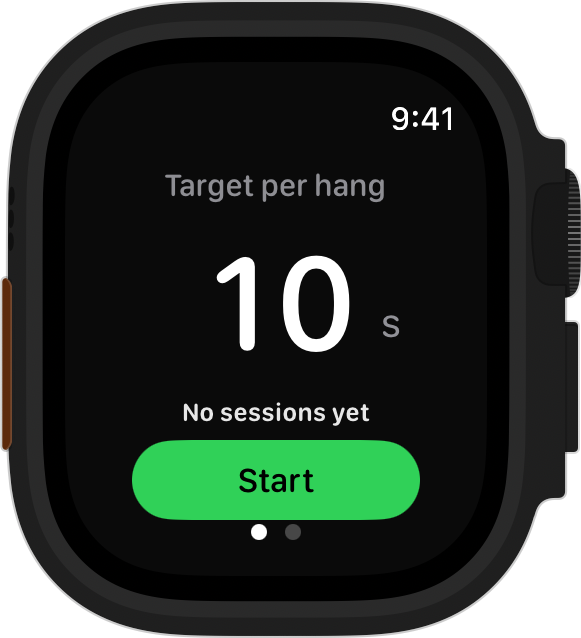
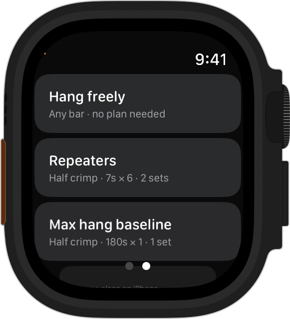
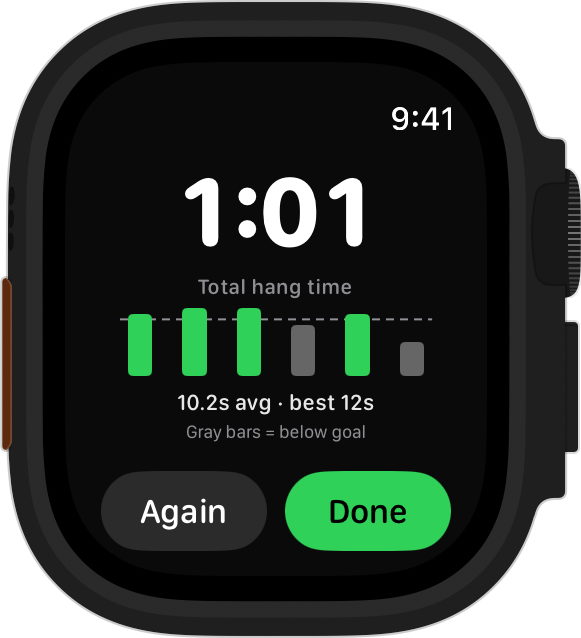

Every rep, zero friction
The simpler a tool is, the more you use it — and the more you use it, the longer you stick with it. Everything in HangSpine is designed around one idea: keep your attention on training, not on the app.


Before you mount: one decision, nothing else
The Ready screen shows your target per hang and a single Start button — turn the crown to change the target, or open the next page to pick a plan. The last 3 seconds before a set shouldn't be spent hunting for features — tap Start, and after a 3-2-1 countdown you're on the bar.

Mount to start, let go to pause
The watch's gyroscope senses your wrist posture continuously: raise your arm overhead into a hang and the countdown starts; let go when you're done and the session pauses itself. One natural hang becomes one complete record — while you're hanging, both hands are on the bar. You have no spare fingers for buttons, and you'll never need any.

One hang, one rep
One continuous hang is one rep, never four 15-second ones. Set a per-hang goal from 5 to 180 seconds (up to 3 minutes); a gentle haptic marks the moment you reach it. By default the set ends at the goal and a rest countdown starts. Turn off “End at goal and rest” and each hang is recorded at its full length: a 60-second hang is a 60-second rep.

Hop down, and it's all there
The summary appears the moment you finish: total hang time, a bar for every hang, your average and your best. Want another round? "Again" takes you straight back. No bloated reports — glance at it, then get on with your day.

The streak you won't want to break
Today shows the day and week at a glance; Dashboard keeps the trends and a 26-week heatmap. Three tabs: Today, Dashboard, Profile. Stats here aren't a dashboard to study — they turn "how long I've kept this up" into one glance of visible progress. For many people, it's the flame they can't bear to extinguish that gets them on the bar every day.